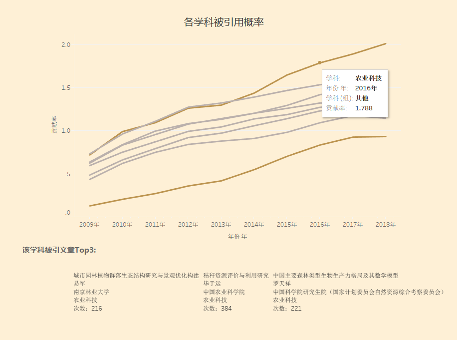
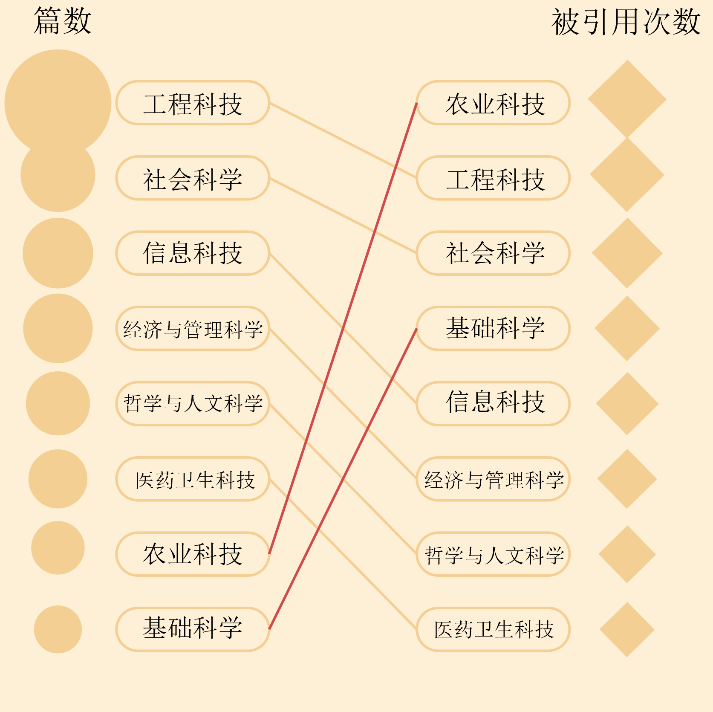
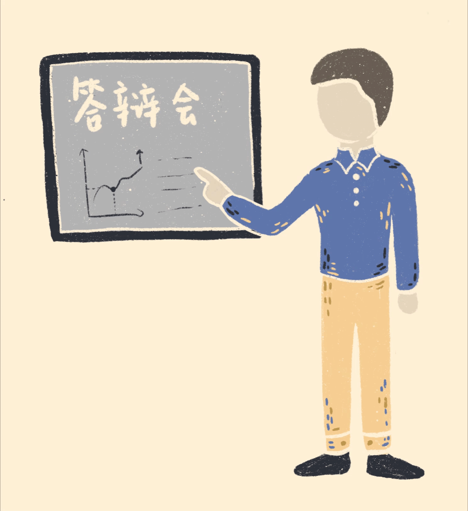

4月1日，上午8点，李海龙吃完早饭来到自习室，在两个月来的“老地方”坐下，打开电脑，还是那篇熟悉到不能再熟悉的毕业论文。昨天晚上，导师又给他发了一整面的修改意见。
晚上11点，李海龙终于回到宿舍，对论文格式进行了再次调整，确认了没有语病和错别字，第二天他就要把这版定稿发送给导师了。
作为中国农业大学农业生态学专业硕士二年级学生，李海龙今年即将毕业。从1月底开始，他就进入了毕业论文写作状态，这样朝八晚十一的生活也已经持续了两个多月。
李海龙的毕业论文会有多大的学术影响力呢？
说明：一篇论文的引用情况，是它对学术研究的贡献、影响力的重要衡量标准。我们采用文献计量方法，以“中国知网”数据库为统计源。知网是国内目前最权威的学术文献数据库之一，收录了《中国优秀博硕士学位论文全文数据库（CDMD）》以及《中国引文数据库》。《中国优秀硕博士学位论文全文数据库》的收录年限为1984年至今，是目前国内相关资源最完备、高质量、连续动态更新的中国优秀博硕士学位论文全文数据库。我们从知网上抓取了近十年论文的引用和被引用情况进行分析。
从1984年至2018年，知网上总共收录109007112篇论文。
其中，只有27.3%的论文得到引用。
在所有论文中，研究生毕业论文一共收录了4065271篇，仅占3.7%。
但毕业论文被引用的比例高达64.1%，远远高于整体水平。
毕业论文的引用去向情况与期刊、会议论文基本相似。被引用的论文中，期刊论文最多，其次是会议论文和毕业论文。由于毕业论文总数较少，所以在所有被引的论文中，毕业论文占比并不高。
核心期刊是能够代表专业学科发展水平的专业期刊，被核心期刊引用的情况可以衡量一篇论文的学术贡献。从2009年到2018年，在核心期刊引用的所有文献中，毕业论文的占比逐渐上升，但始终小于4%，远远小于一般期刊的引用占比。
2009年至2018年，知网收录的硕博论文总量不足期刊的十分之一，这对占比有很大影响，比较毕业论文和期刊论文的被引用概率，会呈现不一样的结果。
一篇论文从发表到被学界发现，再到被引用参考，其实是需要一定时间的，毕业论文也不例外。
那么毕业论文一般在发表之后多久会被引用，又会持续多长时间呢？
出版年份
被
引
年
份
期刊论文引用两到四年前的毕业论文量最多，也就是说，一篇毕业论文在发表的两到四年时间内，是学术贡献最大的时间，这之后，贡献就会逐渐变小。论文的“保质期”跟什么有关呢？
中国传媒大学新闻学院刘昶教授，有XX年做硕博导师的经验，他分析说，论文刚发表的时候有消化期，要慢慢被大家知道才会被引用。而论文的生命周期则跟选题有关，一些人文社科类的毕业论文会追热点，但当热点过去，论文的参考价值自然就会下降。比如传媒领域两三年前热门的“直播”，当时相关论文的被引次数很高，但热度消退之后，就不会有那么高的被引了。
除了选题的热点性，创新性也是影响论文引用生命期的一大因素。扬州大学园艺与植物保护学院教授、博士生导师陈学好解释道，“如果你创新点特别好，你研究解决的问题对整个行业、学术圈影响比较大，大家再做相关的研究的时候就会引用你的论文。” 但当新的问题被彻底解决以后，相关论文的价值就会减弱。当然科技日新月异，新的问题不断出现，等待后人解决。
无论是什么类型的学科，毕业论文写作过程都不是一帆风顺的。农学的李海龙在毕业论文写作时经历过一次巨大的崩溃，他的实验数据与自己的假设有一半都是相反的。由于所在学校的研究条件有限，无法做更加深入的研究，他几度觉得自己要延毕了，只能疯狂寻求老师和学长的帮助。
复旦大学预防医学的研三学生陈想想，刚刚交上了毕业论文初稿。正式动笔写作从去年年底就开始了，但前期的预实验就做了三四个月。实验的结果并不是很好，她只能不断推翻，不断修改，甚至要回到最开始的文献综述去寻找问题所在，往往在实验室一待就是一天。
而对于新闻传播专业的黄若鸿来说，印象最深刻的莫过于公布开题结果名单时，不通过的只有包括自己在内的两个人。由于选题比较敏感，可能面临换题，巨大的焦虑和压力包围着自己。
不同学科的学生培养模式有一定的差异性，对硕博毕业论文的要求，写作的流程和范式也千差万别，但无论是实验操作还是调查归纳，每篇论文在一定程度上都是学科成果的展现。那么，各学科的研究生毕业论文被引用概率有差距吗？（d3还没有写出来）
十年来，八大学科的毕业论文被引用概率都呈现上升趋势，与论文的整体情况一致。农业科技领域的论文引用概率保持领先，医药卫生科技最低，但近些年的上升趋势在加快。（静态图还没有做好）
值得注意的是，2018年农业科技论文的被引用篇数排在倒数第二位，但被引用概率却遥遥领先，高达67%。医药卫生科技毕业论文的被引用概率最低，只有31.1%。
学科间的差异是怎么影响到毕业论文的被引用情况的呢？陈学好教授认为，农学科技论文的高被引用概率与该领域的极高创新性有关，毕业论文从选题开始就要创新，以推动学科进步为任务，比起更注重回顾历史、翻阅文献的学科，或许有了更大的被引用可能性。
而在医学领域，由于国内外医学研究还有一定的差距，大家写作论文的时候一般会从国际上高水平的权威期刊中引用文献。此外，很多医学研究生的毕业论文是求学期间发表在期刊上的论文的汇总，因此被引用的概率会减小。
事实的确如此。2017年，我国共有硕士毕业生52万人，博士毕业生5.8万人，大约是硕士的十分之一。3到5年的进修让博士的毕业论文水平与硕士拉开了一定的差距。数据显示，十年来博士的毕业论文被引用概率始终比硕士高。虽然两者的被引用率都在上升，但硕博之间的差距也在逐年扩大。（这里有个bug，点阵图那里清除所有点会把这里的点也去掉，刷新一下才会出现。）
硕博生毕业论文之间的差距归根到底是硕士、博士之间的差距。很多硕士生会选择毕业之后直接就业，而博士往往抱着从事继续教学研究的打算，因此在对待毕业论文的心态上有所不同。协和医学院博士毕业生刘新农回忆道，他的硕士和博士毕业论文选题不相关，落脚点也不同。但博士论文一定会内容更多、研究技术更熟练、程度上会有加深。
陈学好教授提到：“博士的要求更高，一是他选择解决的问题难度更大，也特别强调系统性；二是他铺的面会更宽一点，整个论文的立体感跟覆盖度要比硕士要丰满得多。”刘昶教授也分析：“博士生读书多，思考问题更深。相应的，导师在辅导硕士和博士的论文的时候，要求不一样，辅导方式也不一样：硕士生管得比较多，博士生则讨论多指导少，因为博士生已经有独立研究的能力了。”
当然，除了硕博生自身的原因之外，教育制度也带来一定的影响。刘昶教授补充道，扩招之后，从本科生开始就出现生源质量下滑。教育跟不上扩招的进度，对学生的要求也就不得不降低。
2017年中国科学技术信息研究所发布的中国科技论文统计结果显示，我国发表科技论文数量跃居世界第二，仅次于美国。但计算篇均被引率时，中国的排名则从发文量第2名，跌至被引率第15名。
科研能力的提高，根本上需要的是人才质量的提高和教育质量的提高。作为国民教育的顶端和国家创新体系的生力军，研究生是高等教育质量和国际竞争力的直接体现。而研究生教育作为高等教育的最高层次, 其发展水平可以表明一个国家的教育水平、科技水平和人才水平, 同时, 也可以表明一个国家未来发展的实力和可能性。中国科技论文在国际上的较低被引用概率，是否可以从研究生的培养寻找原因呢？
刘昶教授本人曾在法国攻读硕博，当谈到中外研究生培养的差距时，他说：“在研究方向这方面，中国是学生问老师我们要研究什么。而在法国，导师会问你想研究什么，不知道的话会先让你去看书，看完书确定自己想要研究的东西之后再开始学习，直到现在依然如此。法国公立大学，一年下来75%的学生留下，25%的学生会被淘汰。”
在美国，研究生教育评估包括内部评估和外部评估，评价主体主要包括高校、政府和社会等参与者。在评价标准和指标上, 还会根据不同专业、学科的特点对不同层次、类型的研究生设计具有差异化的评估标准。在日本，研究生教育的“产官学”一体化模式，通过培养研究生的创造力、知识迁移、知识应用能力和国际化能力以提高日本的国际竞争力。
硕博士的培养是一个长期而持续的过程，学校的培养模式、学术环境对学生的个人发展、研究成果有着重要的影响。我国科研能力的提高，需要更有效、更符合我国国情的培养机制。
其实，单从研究生毕业论文被引情况一方面来看，我国研究生的水平是在不断上升的。陈学好教授认为，虽然欧美国家的底蕴积累较为丰富，但是近些年国内外的差距在缩小。留学归来的学者越来越多，带来了活跃的学术思想。同时中国的科研经费在增多，实验室等平台也不断建设，不少领域的中心已经渐渐从国外转移到中国，我国的科研潜力不容小觑。
2019年4月2日，教育部公开该年部门预算，拟拨款800万，用于抽检约6000篇学位论文篇（不含军队系统）。年初明星学术造假的新闻，暴露出学术不端的不良风气，加强抽检工作是国家加强研究生教育质量保证和监督体系的一大措施，可以看出国家对高等教育的重视。当然，在还学术界一片净土的同时，我们也应该期待这片沃土上能成长出更多丰富扎实、能传布全球的知识种子。
4月22日12：00，李海龙即将提交自己毕业论文的终审版，他关闭电脑，长舒一口气，这篇论文将去向哪里，发挥着怎样的作用呢（结尾需要在主人公答辩后进行采访修改，进行场景化的描述，与开头相呼应）